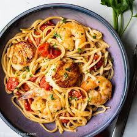

Shrimp and Scallops Pasta

Description
Lemon garlic pasta with shrimp and scallops is a quick, easy, and flavorful weeknight dinner! Fresh shellfish adds a subtle sweetness, which plays off the lemon garlic pasta sauce so well! Finish with lots of freshly grated Parmesan cheese and chopped parsley. Ready from start to finish in less than 30 minutes!
Ingredients
- Long, thin pasta, such as: spaghetti, linguine, buccatini.
- Fresh sea scallops and jumbo shrimp (raw).
- Extra virgin olive oil and unsalted butter
- Aromatics: garlic, anchovies, lemon, red pepper flakes
- Freshly grated parmesan cheese
- Kosher salt and freshly ground pepper
Directions
- Dry the scallops. Place sea scallops on a paper towel-lined plate to absorb any excess moisture. Place a second paper towel on top, pressing very gently on top of the scallops. Let sit for 10 minutes.
- Cook pasta. Meanwhile, bring a large pot of water to a rapid boil, then season with Kosher salt. Cook pasta according to package directions till al dente. Reserve 1 cup of cooking liquid, then drain pasta.
- Sear scallops. While pasta is cooking, heat 4 Tbsp butter and 2 Tbsp oil over high heat in a large skillet. Season scallops and shrimp on both sides with salt and pepper. When hot, add scallops to the pan and cook, undisturbed, for 1-2 minutes, just until a golden brown crust has formed. Flip scallops, then cook an additional 1 minute. Remove to a tray.
- Cook shrimp. Turn the heat down to medium-high, then add shrimp to the pan. Cook about 1-2 minutes per side, just until shrimp are opaque. Transfer to tray with scallops.
- Char the lemon. Cut 1 lemon into thin slices about ¼” thick. Add lemon to the pan, then cook until charred, about 1 minute per side. Remove to the tray with seafood.
- Make the sauce. Add another 2 Tbsp each of olive oil and unsalted butter, then add minced garlic, anchovies, lemon zest, and red pepper flakes. Cook, breaking up the anchovies with the back of a wooden spoon, until melted into the sauce, about 3 minutes.
- Add pasta. Pour in the drained, cooked pasta, along with ½ cup reserved cooking liquid. Stir to thoroughly coat pasta in the lemon garlic pasta sauce.
- Serve immediately. Add seafood and cooked lemon slices back to the skillet, then stir in freshly grated Parmesan cheese and finely chopped fresh parsley. Serve with a pinch of flaky sea salt, then garnish with additional cheese and herbs as desired.